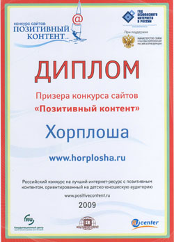
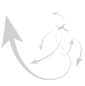

НОВОСТИ
Все
новости
03.12.10 Появился новый образ Хорплоши.
За понравившийся Вам образ Вы можете проголосовать на странице " Поиск образа". Подробнее...

|
Остров Добра и Света (ДИС)
Дорогие мои читатели.
Прошу не судить строго, а просто прочитать новую историю о Хорплоше, о ее новых друзьях и разных поступках.
Послушайте внимательно,
Включив воображенье,
За это обязательно,
Вас ждет вознагражденье.
За морем океаном,
Чудесный остров есть
Во все концы земные
Несется о нем весть.
На том прекрасном острове
Нет холода и тьмы,
Нет зла, обмана, зависти,
Мороза и зимы.
Там жители не ведают
Ни гнева, ни каприз,
Добра и света остров,
А сокращенно ДиС.
Ни гнева, ни каприз,
Добра и света остров,
Иль сокращенно ДиС.
Хорплоша управляет им,
Творит на нем добро,
По праздникам печет она,
Огромнейший пирог.
И жители здесь счастливы,
Ведь, что ни день-сюрприз,
Огнями весь сверкает,
Чудесный остров ДиС.
Деревья изумрудные
Колышутся листвой,
Над ними светит радуга,
Шумит морской прибой.
Там у Хорплоши замок,
Огромный, золотой,
Всех добрых, милосердных
Берет она с собой.
Одаривает их она,
Вниманьем и заботой,
И всем на этом острове
Добро творить охота.
А если вы хотите
На острове пожить
Быть добрым светлым нужно
И милосердным быть.
Там жители - дисяне
Выращивают рис,
Волшебный, очень вкусный,
Им славен остров ДиС.
Когда растет, дают все
Крупицу доброты,
И скушав рис волшебный,
Счастливым станешь ты.
Злой, сразу станет добрым ,
А жадный - щедряком,
И Всех пригласит Хорплоша
В свой светлый замок - дом.
А если быть коварным,
Жестоким, жадным быть,
Тогда на другой остров
Возможно угодить.
Еще один есть остров,
Ужасный на нем вид.
Там ХОЛОД, МРАК и ТЕМЕНЬ.
Так и зовется ХМиТ.
Там нет совсем растений,
И птицы не поют,
Тоскливо, грязно, сыро,
_________________-
Хорплоша тут на острове,
Сажает злых в темницу ,
И заставляет их там,
Голодными трудиться.
Здесь, в ядлаборатории
Выводят новый вид
Злоядных скорпионов,
Ужасный остров ХМиТ.
Плетут они все снасти,
Для ловли рыб морских,
Сочки для скорпионов,
Яд добывают с них.
На ДиСе – чудном острове,
Добры все до сих пор.
Там дружно проживали,
Хом дядя, тетя Дор.
Мечтал о дальних странах
Отважный дядя Хом,
Корабль три года делал,
Чтоб был надежный он.
И вот, однажды утром,
С женою дядя Хом,
Поплыли вокруг света,
Покинули свой дом.
Печальный чудо-остров,
Попался на пути,
Решили ненадолго
Они на нем сойти.
Высокие деревья
Растут по берегам.
А что внутри не видно.
Но что же, что же там?
На темный-темный остров,
Супруги вдруг попали.
Что с ними приключилось.
Они нам рассказали.
Дядя Хом
Ступили мы на остров
Там мрак и темнота,
Хотели развернуться
Назад, тропа не та.
Тетя Дор
Ах, мы же заблудились,
Что ж делать нам теперь?
-Смотри, бежит навстречу,
Нам непонятный зверь.
-Причесан, иль взлохмачен?
Я что-то не пойму,
Смеется или плачет,
С сумой…Что и к чему?
Кто к ним бежал навстречу
Супруги не узнали.
Они совсем внезапно,
Сознанье потеряли.
Очнулись в подземелье,Где не встает заря. В сырой холодной комнате,
Где делали все яд.
Все лица вокруг мрачные,
Голодные глаза,
Лишь у одной с искринкой,
А звать ее Оза.
Узнать бы что случилось?
Смекнула тетя Дор,
И завела душевный
И тихий разговор.
-Как мы сюда попали?
И что же это есть?
|
А сколько уже времени
Находимся мы здесь?
Оза
-Приплыли вы на остров.
С названьем мрачным ХМиТ,
Здесь нет добра и света.
Здесь каждый скряга - жид.
Тетя Дор
Кто правит этим островом?
Зачем ему он нужен?
А почему на острове
Никто ни с кем не дружит?
Оза
На этом скверном острове
Работает программа,
По ней весь мир злым должен.
Стать поздно или рано.
Тетя Дор
Но это невозможно!
Всех сделать сразу злыми,
Никто не обладает же
Средствами такими.
Оза
Растят здесь скорпионов,
Выводят новый вид,
Занятием коварным
Гордиться остров ХМиТ.
Укусы скорпионов
Всех поражают злом.
Но самое ужасное
Случается потом.
А правит этим островом
Плоша-госпожа,
И злые крокодилы
Сей остров сторожат
Тетя Дор.
- Я поняла, поэтому
Все злые здесь сидят,
Злым и голодным взглядом,
Кругом они глядят.
Но как вернуть их к жизни?
Как доброту вернуть?
Должна я это сделать.
Хоть и нелегок путь.
Оза
-Скажу тебе я тайну,
Ее должна ты знать,
Яд скорпиона действует
Всего лишь суток пять.
Все скорпионы чуют
Ген чуткой доброты
И подавить желают
Будь осторожна ты!
Но если очень добрый,
Потратить больше яда,
И укусить 3 раза,
Злоскорпиону надо.
Теряется сознанье,
Приходит безразличье,
А с третьего укуса,
Приходит зла величье.
Тут в разговор вписался
Отважный дядя Хом,
Промолвил он решительно,
Приняв серьезный тон.
Дядя Хом
Спасать я остров буду,
Я храбрый, я не трус,
Пока не получили
Мы следующий укус.
Я добролет придумаю,
Чтоб полететь на Дис,
И привезем сюда мы,
Волшебный вкусный рис.
Всех жителей накормим,
И скорпионов тож,
Тогда нигде злодеев.
Не сыщешь, не найдешь.
Оза
Хорплоша вов сем мире,
Ведет сейчас подсчет,
Злых больше или добрых?
-А что ее влечет?
Оза
Коль больше злых окажется,
ТО скорпионов тучи,
Всех добрых закусают,
Чтобы не быть им лучше.
Ну а пока Хорплоша
Не знает какой быть.
Добро творить на свете,
Или же зло вершить?
И добролет волшебный
Стал делать дядя Хом,
На третий день готов был,
Уютный, словно дом.
Мотор лишь заводился
При фразе «Добрый мир».
А на борту петь нужно,
Гимн Диса «Добра пир!»
Гимн Диса.
Все в мире станут добрыми,
Придет скоро пора.
Наступит вечный праздник,
И будет пир добра.
Засветит всюду солнце,
И расцветет весь мир,
Цветы кругом распустятся,
Наступит добра пир.
А дядя Хом трудился,
Ведь мир спасать не лень…
Но жаль укус коварный,
Сразил в четвертый день
И будущее мира,
Как это не трагично,
Бедняге дяде Хому,
Вдруг стало безразлично.
Но научилась делать
Коварнейшим свой взор,
Растила скорпионов,
Со всеми тетя Дор.
Одетая в нечистый
Дырявый сарафан,
Придумывала тонко,
Спасенья мира план…
Решила тетя Дора
«Уже нельзя тянуть.
А то случиться страшное,
Что вспять не повернуть…»
Одна на добролете,
На взлетной полосе,
Свершилось это ночью,
Когда уснули все… |
|
Активных опросов на данный момент нет.

Поиск
Подписка на новости
|
{kind=link}